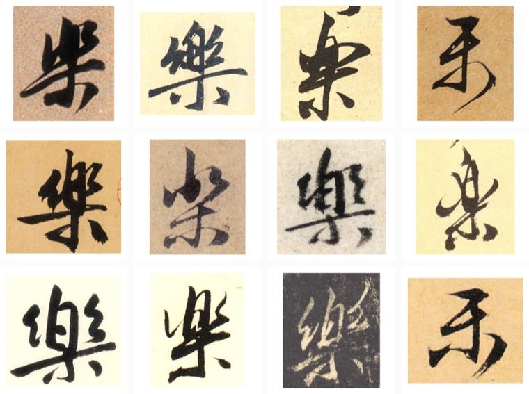
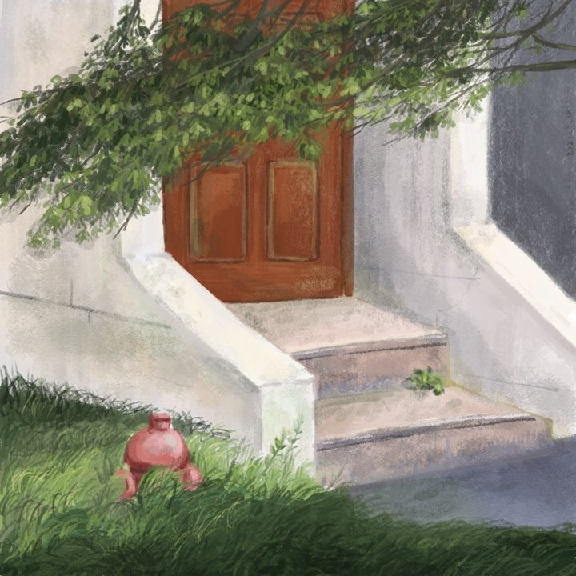
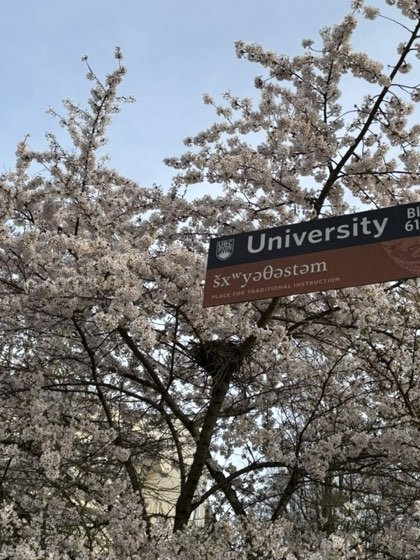

Fun Facts
My Name
My name is written as 乐 (Lè) 瑶 (Yáo) in Chinese. 乐 means “joy,” while 瑶 refers to precious jade. In Chinese culture, jade symbolizes good virtues. The sound of my name also echoes the Chinese phrase 快乐逍遥 (kuài lè xiāo yáo), meaning “to live with joy and a free spirit.”

Outdoors
I love hiking! Vancouver has so many incredible hiking destinations, and my favorite is The Chief in Squamish.
Photography & Painting
I enjoy photography and painting, and once worked as a wedding photographer’s assistant.

Prose & Poetry
I was especially drawn to literature, essays, and history in elementary and middle school, and almost decided to study Chinese literature or history. My work has appeared in several student magazines and newspapers and has received multiple provincial and national awards.
You might still be able to find some of the sentimental pieces I published in student magazines back then ;D
Meet NongNong
I love cats! One member of my family is a little orange cat named NongNong.
My Journey

- I was born and raised in Hunan Province, in a small tourist town. The photograph is the morning mist over Dongjiang Lake in my hometown.
- From 2016 to 2020, I attended university in Beijing, a city steeped in history. My favorite place there is the Summer Palace. The photograph shows the sunset at the Summer Palace.
- In 2020, I moved to Shanghai to study at Shanghai Jiao Tong University. The university’s Xuhui neighborhood is one of the places I recommend most in Shanghai, with towering plane trees and historic streets that retain the character of historic Shanghai. The photograph shows the Oriental Pearl Tower at night.
- In 2022, I moved to Vancouver and later began my Ph.D. journey. I love Vancouver, especially the mentors and friends I have met here. The scenery often feels surreal; even the long, rainy “Raincouver” winters have their own charm. I feel very fortunate to pursue my Ph.D. here. The photograph shows the UBC campus during cherry blossom season.